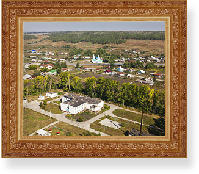

Наследие Пластова
Аркадий Александрович — гений русского века. Им было написано более 10 000 работ, получено более дюжины наград, работы вошли в собрание Института русского реалистического искусства (ИРРИ).

На родине художника в селе Прислониха бережно хранят память о нем. В 1988 году был открыт мемориально-документальный музей А.А. Пластова, посвящённый жизни и творчеству Аркадия Александровича. В Ульяновске в честь Аркадия Александровича названа улица, а на ней установлен памятник художнику. Так же в Ульяновске проходит ежегодный фестиваль художников «Пластовкая осень».
В 2010 году открыли музей современного изобразительного искусства им. А.А. Пластова. Картины великого земляка украшают целую аллею, чтобы даже в неприспособленным для искусства местах, каждый мог насладиться талантом этого великого талантливого человека.

Вид села Прислониха
Вид села Прислониха
Вид села Прислониха